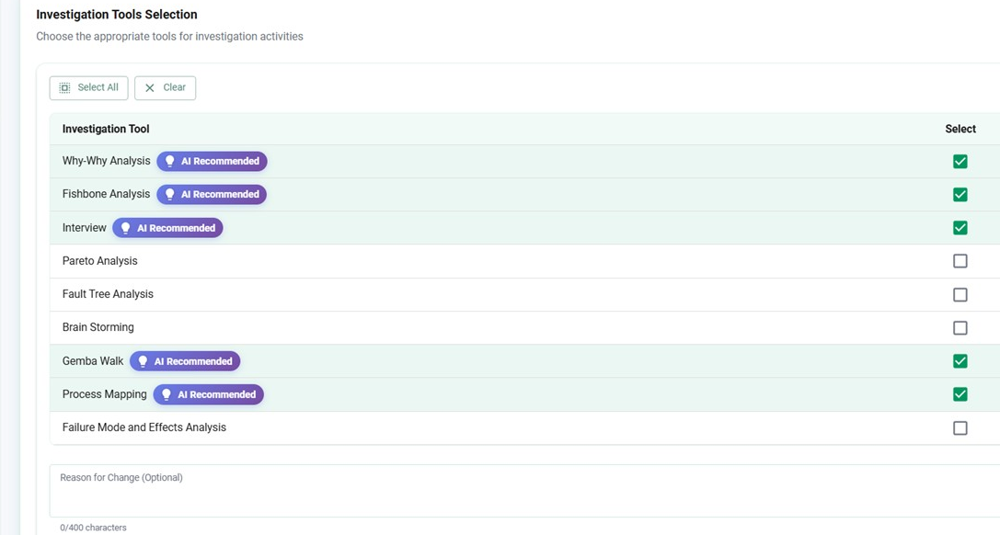

InvestigationIQ is Pivot Path's AI assistant for RCA and CAPA. It guides investigators through every standard framework, drawing on your own past investigations.
Your sharpest minds, freed to do the thinking.
Root-cause analysis is the work of your most curious, scientific people, and it is exactly the work that buries them in method and paperwork. InvestigationIQ takes that weight off the investigation without taking over the thinking. Three things follow.
Save up to around 7 hours on a single investigation, and across a year of them, that is hundreds of hours returned to the people you can least afford to have formatting documents.
Every investigation runs through the standard frameworks end to end, so nothing is skipped under deadline.
The assistant drafts questions and surfaces likely causes, saving up to around 7 hours on a single investigation.
Suggestions are drawn from your own past investigations and templates, so the conclusion holds up in review.
Estimated, from investigations run on InvestigationIQ; time saved varies by case.
From the event to the conclusion, InvestigationIQ recommends the frameworks that fit the case and walks the investigator through each one, so the method stays consistent no matter who runs it.

Selecting the investigation tools, with AI-recommended frameworks for the case.
The frameworks your investigators already trust, guided step by step and filled from your own evidence rather than a blank page.
Why-Why drills from the symptom to the true cause, one question at a time, with each step recorded.
Fishbone and 6M organise causes across Man, Method, Machine, Measurement, Material and Environment.
Interviews and Gemba-walk findings are captured against the investigation, not left in a notebook.
And more, such as
Process Mapping FMEA Pareto Analysis Fault Tree Analysis BrainstormingGuided by AI, grounded in your own investigation history, and built and run on PivotOS, the validated GxP cloud foundation.
A manual investigation starts with an empty template and depends on who is holding the pen. InvestigationIQ changes that.
Three views from one investigation: the guided questioning, the cause-and-effect map, and the systematic categorisation behind the conclusion.
Root-cause analysis is judgement work, and it stays that way. InvestigationIQ recommends the frameworks, drafts the questions and retrieves the relevant history, so your investigators spend their time reasoning, not formatting. The AI runs on PivotAI, the AI layer inside PivotOS.
Its suggestions are grounded in your own approved content, and your data is never used to train foundation models.
Recommends frameworks, drafts questions and retrieves the relevant history for each case.
Your investigator does the reasoning and signs off the conclusion.
Every suggestion traces back to your own investigation history and templates.
Nothing critical is released without a human reviewer in the chain.
Because every step is guided, recorded and grounded in your own evidence, the investigation is complete and consistent, and the corrective action that follows stands on a root cause you can defend in review.
Read the AI Trust Centre for how we govern AI in regulated work.
We will run a real root cause through the guided frameworks on your own templates.